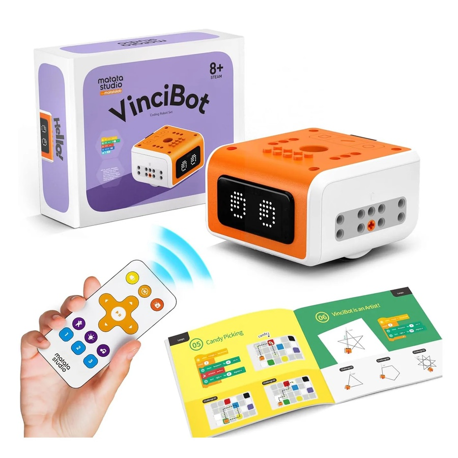

toys that build problem solving at 8
- …at 8 without a tablet
- …at 8 that they won't get bored of
- …at 8 south africa

MATATASTUDIO VINCIBOT
Found it.
Ages 8-12.
75 activity cards and 18 challenges. They plan the route, test it, fix it, try again.
Shop VinciBot